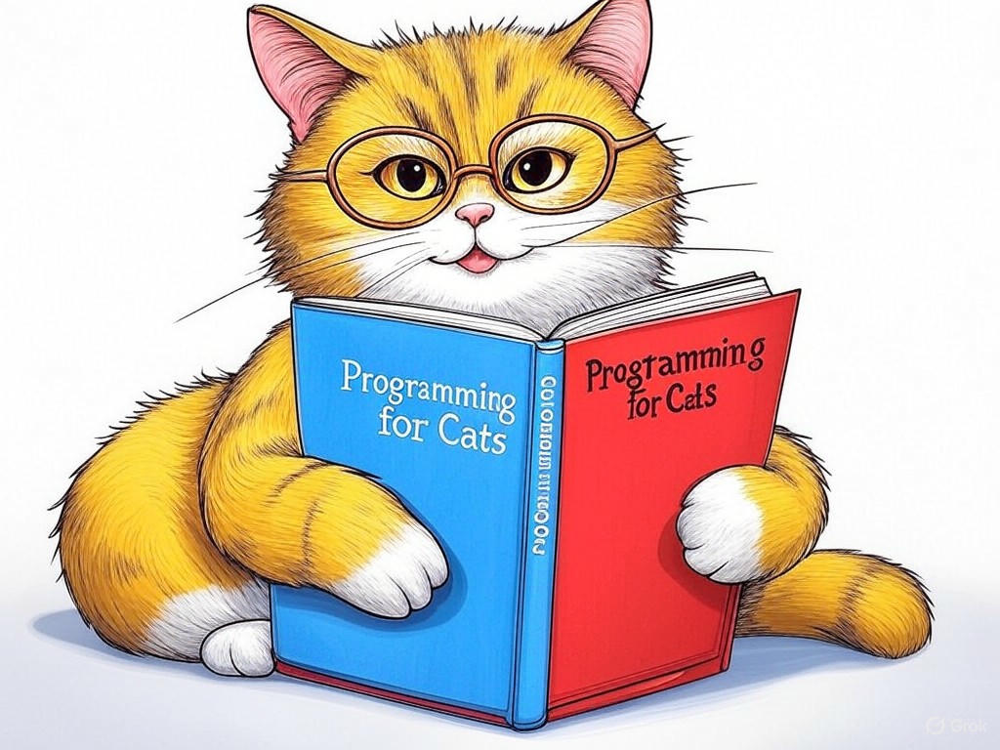

Transform Your Online Presence with Custom Website Development Services Near Jeffersonville, IN
Table of Contents
- Introduction: Understanding Your Specific Challenges
- How Can Custom Web Development Make Your Business Stand Out Near the Big Four Bridge?
- What Are the Secrets to Faster Website Performance in Jeffersonville?
- Can Custom Solutions Improve Your SEO Rankings Near the Ohio River?
- Why Is Mobile Responsiveness Crucial for Your Business in Downtown Jeffersonville?
- How to Reduce Website Maintenance Costs with Modern Tech Near the Howard Steamboat Museum?
- Conclusion: Your Implementation Plan and Next Steps
Introduction: Understanding Your Specific Challenges

We understand that navigating the world of custom website development services near Jeffersonville, IN can feel overwhelming. You're not alone in facing these challenges; many businesses in the area are looking to enhance their online presence to stand out in a competitive market. Custom website development services near Jeffersonville, IN are tailored solutions designed to meet your unique business needs, ensuring your website not only looks great but also functions seamlessly. This is crucial for businesses in Jeffersonville, where the local economy thrives on tourism and retail, with over 60% of consumers preferring to engage with businesses online before visiting in person. In this article, we'll explore seven proven strategies to transform your website into a powerful tool for your business. We'll cover everything from standing out near the Big Four Bridge to improving SEO rankings near the Ohio River. By the end, you'll have a clear roadmap to enhance your online presence and drive more business. If you're struggling with understanding the value of custom website development services near Jeffersonville, IN, start by assessing your current website's performance and user feedback specifically. This will give you a baseline to measure improvements against. You're smart to seek out these solutions, and we're here to guide you every step of the way.
How Can Custom Web Development Make Your Business Stand Out Near the Big Four Bridge?
You already know that a unique online presence can set your business apart, especially in a vibrant area like Jeffersonville near the Big Four Bridge. Let's dive into how custom web development can elevate your brand. Custom solutions allow for personalized branding, seamless user experiences, and integration with local attractions like the Big Four Bridge, which draws thousands of visitors annually. Here's how you can make your business stand out:
- Personalized Branding: Tailor your website's design to reflect your brand's unique identity, ensuring it resonates with your local audience.
- User Experience: Implement intuitive navigation and interactive elements that keep visitors engaged longer.
- Local Integration: Feature local landmarks like the Big Four Bridge in your design or content to connect with the community.
What Are the Secrets to Faster Website Performance in Jeffersonville?
We know you're keen on ensuring your website performs at its best, especially in a bustling area like Jeffersonville. Faster website performance is not just a luxury; it's a necessity. Studies show that a one-second delay in page load time can result in a 7% reduction in conversions. Here are some secrets to achieving faster performance:
- Optimize Images: Compress images without losing quality to reduce load times.
- Minimize HTTP Requests: Combine files and use CSS sprites to reduce the number of server requests.
- Leverage Browser Caching: Set up caching to store frequently accessed data on users' devices.
- Impact on Load Time: How much will this technique reduce load times?
- Ease of Implementation: How difficult is it to implement this technique?
- Cost: What are the costs associated with this technique?
Can Custom Solutions Improve Your SEO Rankings Near the Ohio River?
You've already taken steps to understand the importance of custom website development services near Jeffersonville, IN, and now you're ready to explore how these solutions can boost your SEO rankings, especially near the Ohio River. Custom solutions can significantly enhance your SEO by allowing for precise optimization tailored to your business and local context. Here's how:
- Local SEO Optimization: Incorporate keywords related to Jeffersonville and the Ohio River to improve local search rankings.
- Content Customization: Create content that resonates with your local audience, increasing engagement and dwell time.
- Technical SEO: Implement custom technical solutions like schema markup to enhance search engine understanding of your site.
What specific local keywords do you think would resonate most with your audience near the Ohio River?
Why Is Mobile Responsiveness Crucial for Your Business in Downtown Jeffersonville?
You're smart to recognize the importance of mobile responsiveness, especially for your business in downtown Jeffersonville. With over 50% of web traffic coming from mobile devices, ensuring your website is mobile-friendly is non-negotiable. Here's why mobile responsiveness is crucial:
- User Experience: A mobile-responsive site provides a seamless experience for users on any device, which is essential for downtown Jeffersonville's bustling environment.
- SEO Benefits: Google prioritizes mobile-friendly sites in search rankings, which can significantly boost your visibility.
- Conversion Rates: Mobile-optimized sites see higher conversion rates, as users are more likely to engage and complete actions.
- User Experience: How does the design enhance the user experience on mobile devices?
- SEO Impact: Will the design improve your search engine rankings?
- Conversion Potential: Does the design facilitate higher conversion rates?
How to Reduce Website Maintenance Costs with Modern Tech Near the Howard Steamboat Museum?
You're already aware of the importance of keeping your website up-to-date, and you're looking for ways to reduce maintenance costs, especially near the Howard Steamboat Museum. In our experience, modern technology can significantly lower these costs. Here's how you can achieve this:
- Automated Updates: Use content management systems (CMS) that offer automatic updates to reduce manual work.
- Cloud Hosting: Opt for cloud hosting solutions that provide scalability and automatic backups, reducing the need for extensive maintenance.
- AI and Machine Learning: Implement AI tools for monitoring and optimizing your website's performance, which can save time and resources.
In the industry, businesses that adopt these modern technologies have seen a 30% reduction in website maintenance costs. So what? By leveraging these solutions, you can allocate more resources to other areas of your business, enhancing your overall efficiency and profitability.
Conclusion: Your Implementation Plan and Next Steps

You've now explored seven proven strategies to enhance your website with custom website development services near Jeffersonville, IN. From standing out near the Big Four Bridge to reducing maintenance costs near the Howard Steamboat Museum, you're equipped with actionable insights to transform your online presence. The key takeaways are clear: personalized branding, faster performance, improved SEO, mobile responsiveness, and cost-effective maintenance are all within your reach.
Your next steps are crucial. Start by implementing the actionable takeaways from each section, such as conducting a website audit, optimizing images, and researching cloud hosting options. But for a truly tailored solution, consider partnering with Perfect Your Customer, LLC. Our team specializes in custom website development services near Jeffersonville, IN, offering personalized consultations that address your specific needs and challenges. We can help you implement these strategies effectively, ensuring your website not only meets but exceeds your business goals.You're smart to seek out these solutions, and we're here to support you every step of the way. Contact Perfect Your Customer, LLC today for a consultation that's tailored to your specific needs and challenges with custom website development services near Jeffersonville, IN. Let us help you turn your website into a powerful tool for your business, enhancing your online presence and driving more traffic and conversions. Together, we can make your website a standout success in Jeffersonville.